第一阶段素材审阅 · 尚未进入应用开发 · 包名 com.example.orbitmission
模型为本地生成 GLB。Editor 工作流因官方授权提示服务连接失败而终止。效果图为素材渲染与静态设计稿，非 PICO 运行截图。语音为本机 TTS 合成，请试听确认播报风格。
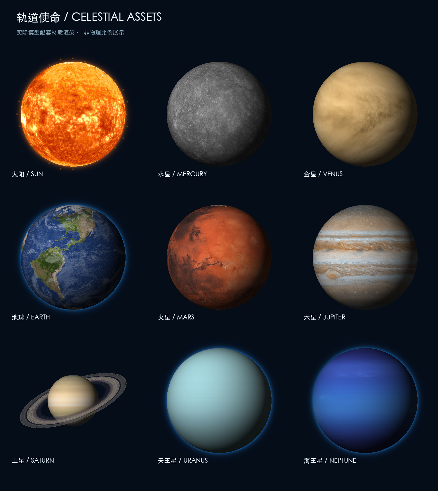
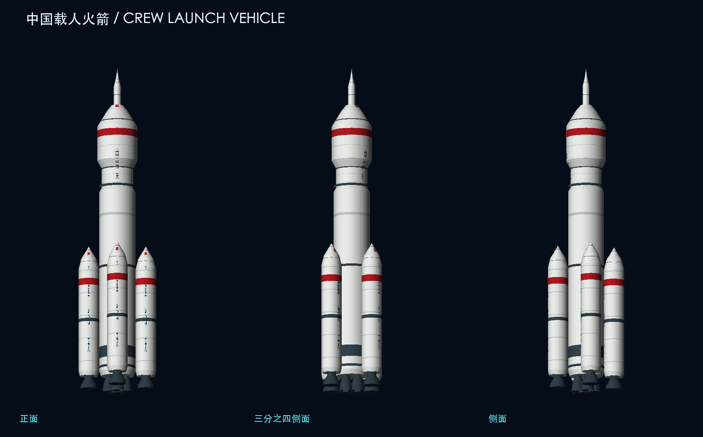
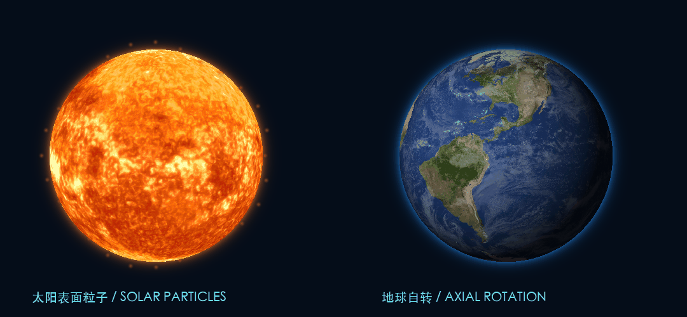
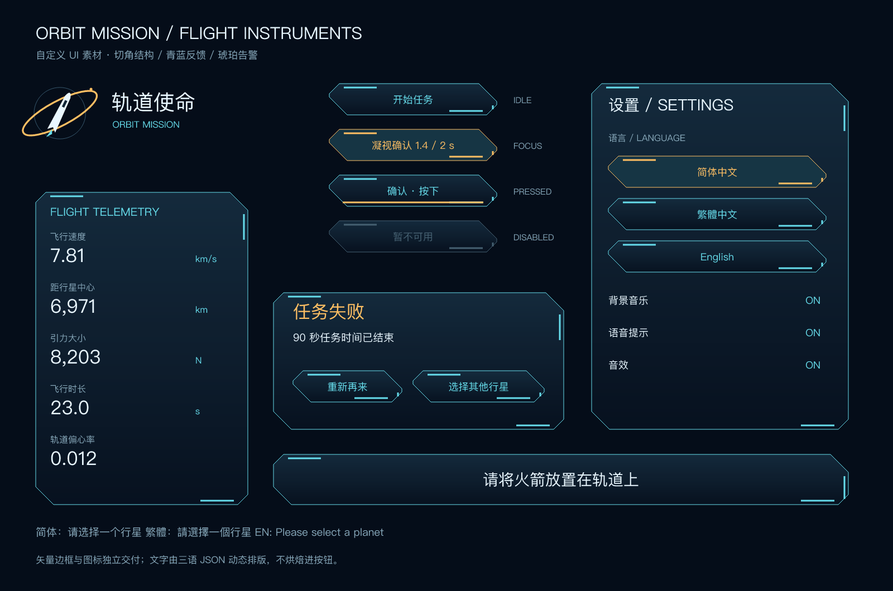
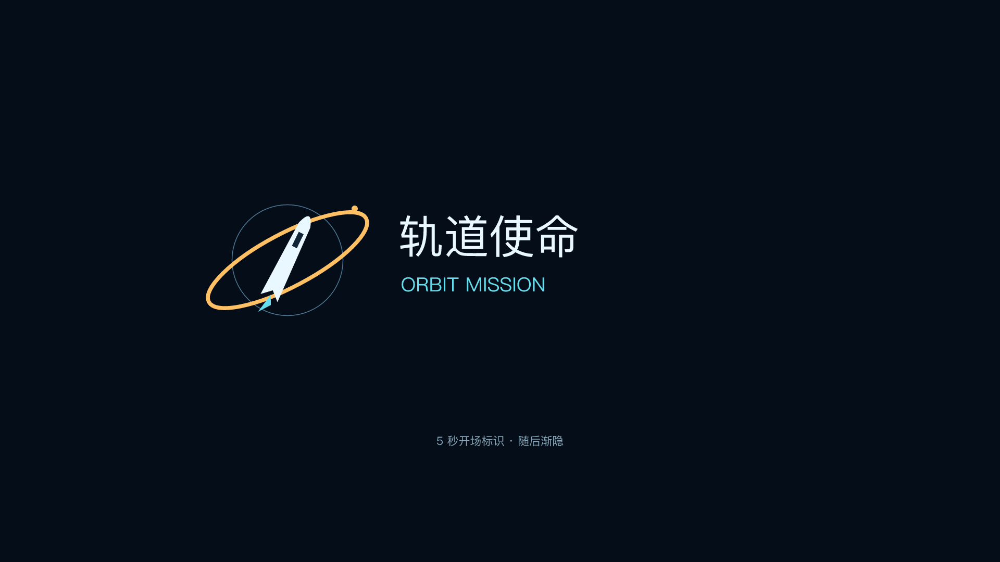
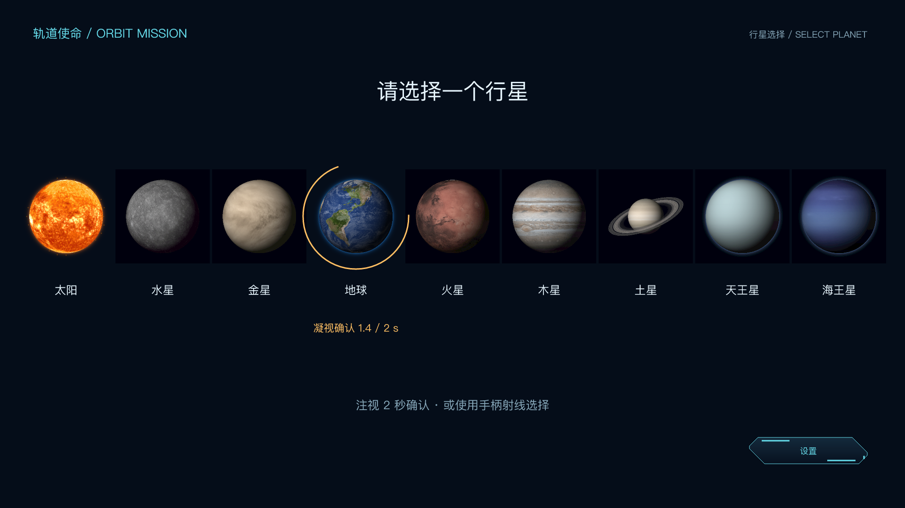
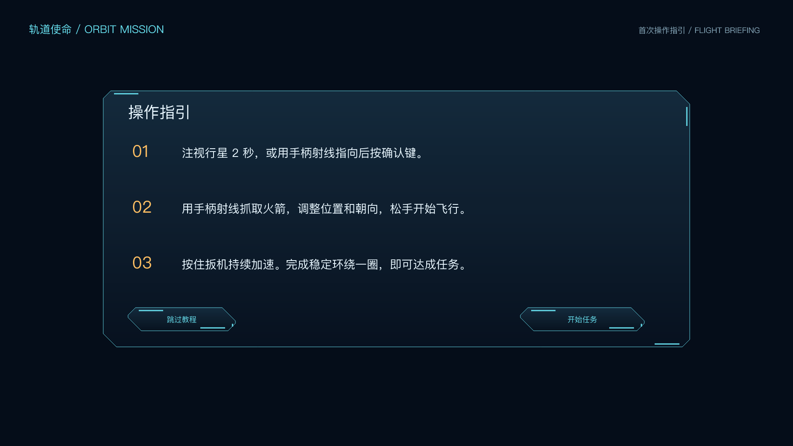
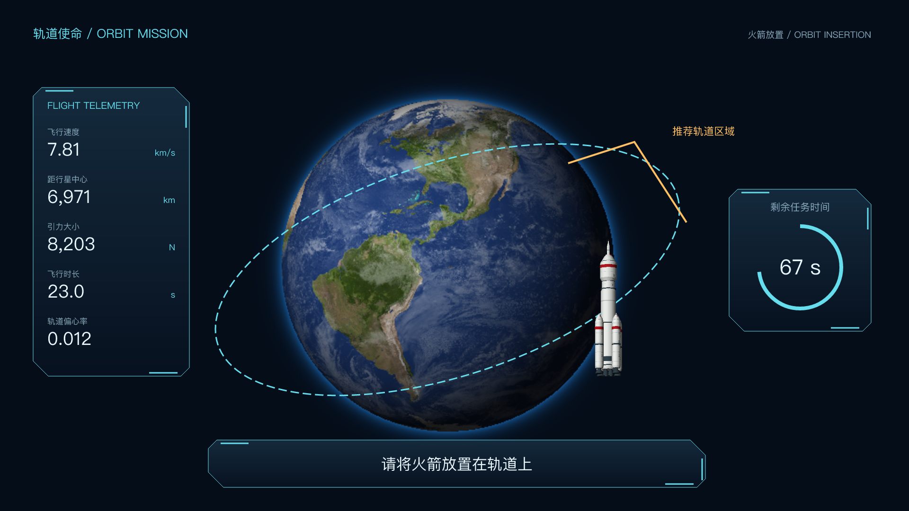
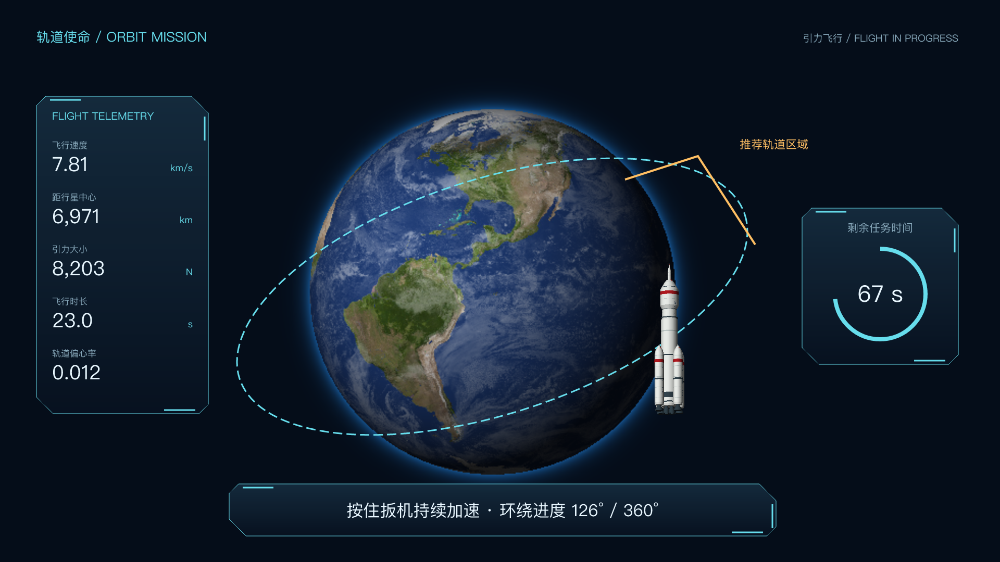
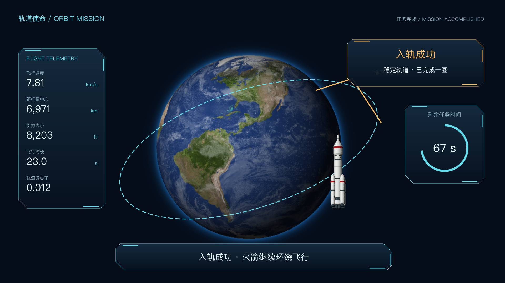
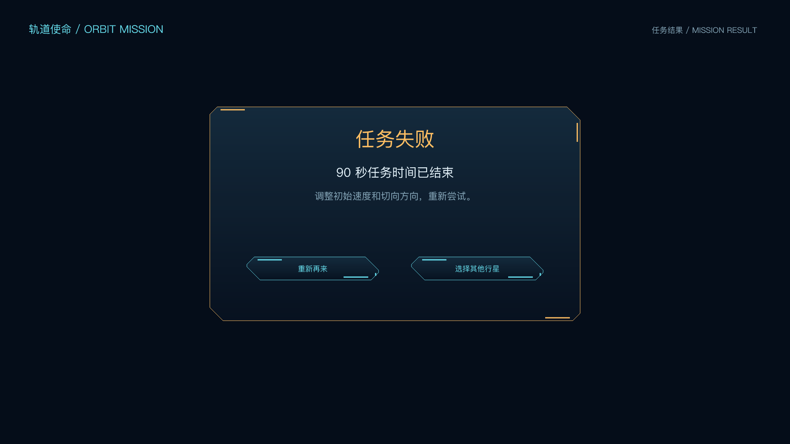
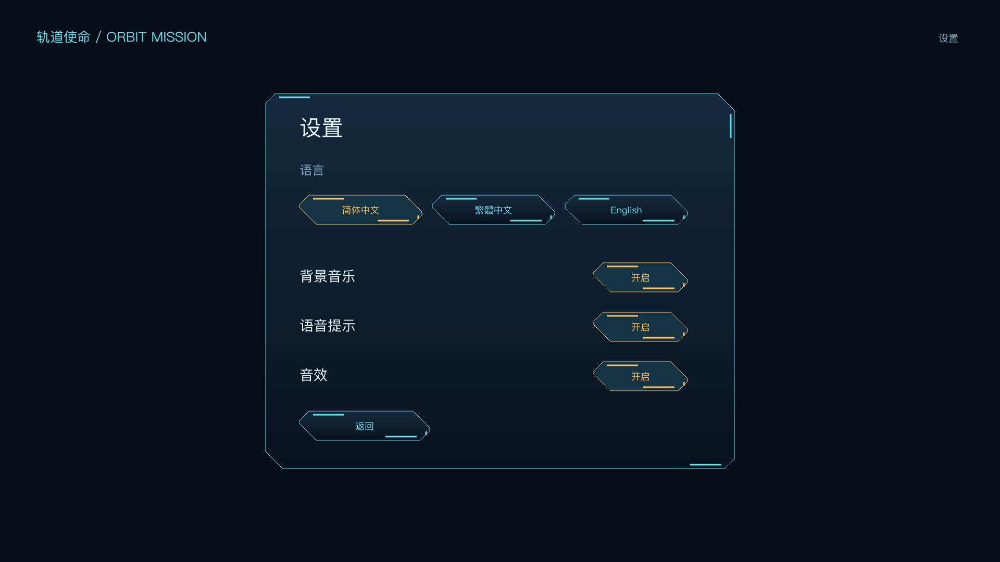
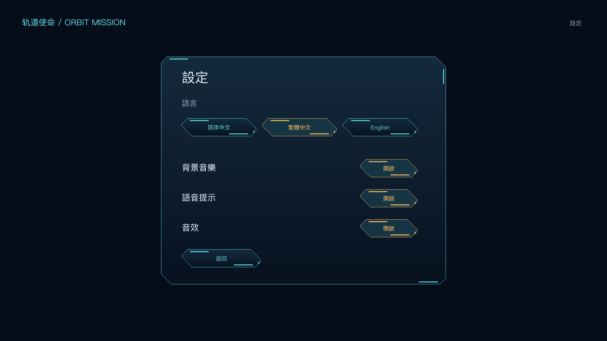
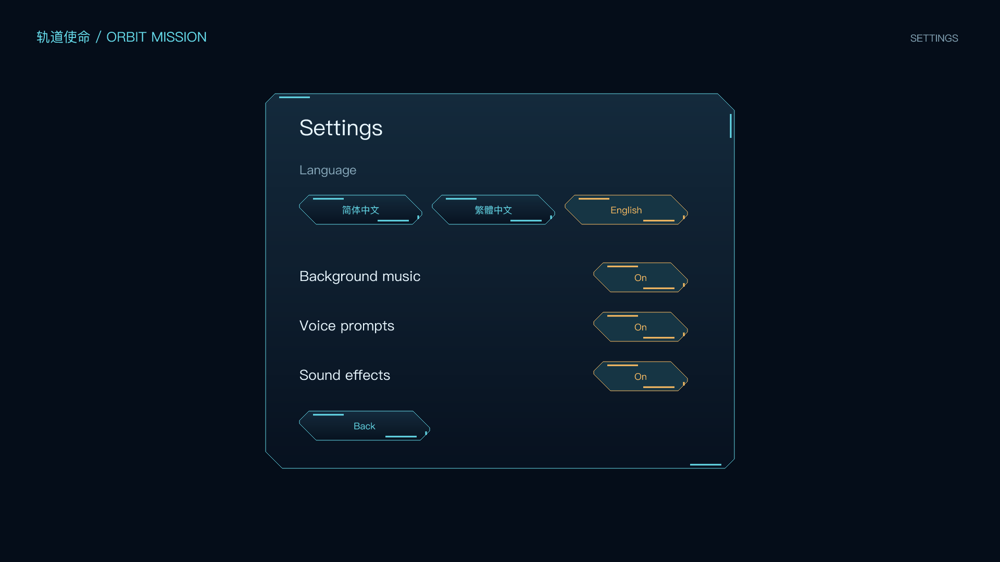
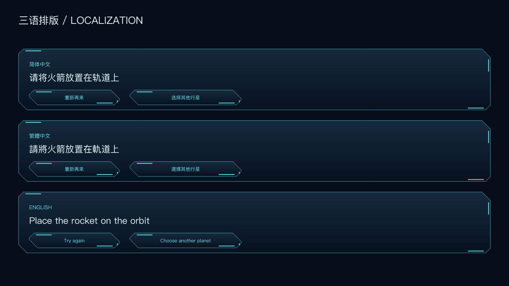
深空配乐 / 60 秒循环
三语全部 18 条提示串联
五类音效串联
请选择一个行星。
请将火箭放置在轨道上。
入轨成功。
任务失败。
撞击警告。
飞出边界警告。
請選擇一個行星。
請將火箭放置在軌道上。
入軌成功。
任務失敗。
撞擊警告。
飛出邊界警告。
Please select a planet.
Place the rocket on the orbit.
Orbital insertion successful.
Mission failed.
Warning. Collision risk.
Warning. Approaching the system boundary.